My Role
Role: User Experience Designer
Team: 1 UX Designer, 2 Marketing Managers, 1 System Architect
Methodology: Agile
Duration: 6+ weeks research + sprint-based design execution
Project Overview
The Tyre Market platform improves the tyre-buying experience for individual and commercial users. Backed by the Cherry Tyre Inventory system, it helps users research, compare, and buy tyres while connecting them to local services.
Problem Definition
- Users overpay by 10% offline and 5% online due to poor research tools.
- Store discovery and service booking lacked clarity.
- Decentralized backend caused 20% inventory loss annually.
🎯 Business Goals
- Improve the tyre research and purchase flow.
- Streamline online-to-offline transitions.
- Empower local retailers through real-time inventory tools.
User Research
Conducted 15 B2C and 13 B2B interviews along with field visits to stores and warehouses.
The tyre market is not very price sensitive.
Consumers are more concerned about the tyres functionality, than its price. Besides, being a homogenous product, most tyre companies price their tyres at more or less the same levels.
- Tyre Users are becoming more proactive.
-
Users are doing more research and considering more retailers and brands.
-
Users considering 3+ brands is up 38%.
- Reputation and brand are more important than ever.
- Drivers looking for tyres increase 11%.
Key Insights
- 41% of users rely on tyre review videos.
- 38% explore 3+ brands before deciding.
- Trust factors: performance, past experience, brand, post-sales support.
Reasons for Purchase
- In the process of maintenance.
- Tread level is low as a process of penny test.
- Puncher.
- Upgrade for better Performance.
- Seasonal changes (winter, summer etc.).
- Based on family member or friend recommendation.
- Something was strange with my tyre.
- I bought a pre-owned car so I want to replace tyres.
- Improve the appearance.
Reasons for Purchase
- Price at the other locations.
- Store timings.
- Checking for the pickup.
- Schedule an appointment.
- For discounts and offers.
- Shipping availability.
SOURCES USED FOR INFORMATION ON TIRES
- Tire and automotive websites
- Vehicle service center websites
- Vehicle brand websites
- Social networking websites
- General automotive websites
- Consumer-generated reviews online
- Professional automotive review websites
- Video Newspaper websites
Users will do product research for the following details
- Compare tire(s) features
- Looked up tire care information
- Watch a tire(s) review or video
- Learn more about an advertisement/promotion
- Shipping information
- Tyre(s) warranty information
- 3rd party or consumer-generated reviews of tires
Video when researching tires: 41% of the users will watch videos when researching about the tyres.
Types of video information expected by user
- Comparison
- Product features
- Professional Reviews
- Racing or sports
- TV ad / Promotion
Some more info:
Past Experiences & Price are the most important factors in the mind of a customer before buying a tire, followed by Brand Name & After Sales Service.
Tyre buyers are turning to online video before purchasing.
There are some significant influences of different brands of tyres as well as different regions on its sales.
User Segments
B2C (Frontend)
- Car/bike owners
- Fleet owners
- Farmers
- Industrial customers
B2B (Backend)
- Retail store managers
- Warehouse staff
- Admin and PO managers
UX Approach
- Card Sorting for IA
- Journey Mapping for seasonal and emergency users
- Mobile-first responsive design
- Product Comparison Tool
- Store Locator + Inventory Sync
- Video Reviews Integration
Key Features Delivered
Website
- Tyre finder (by number or model)
- Smart filters + comparison
- Checkout with fitting/service booking
- Content-rich product pages
Backend
- Cherry IMS with real-time stock
- PO and transfer tracking
- Barcode readiness
- Sales & inventory dashboard
Design Differentiators
- Research + Retail Access in one place
- Contextual CTAs guiding user flow
- Smart local inventory sync from backend
- Real personas driving decisions
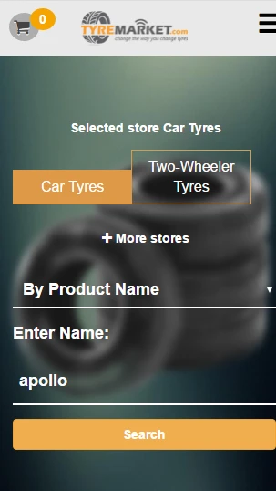
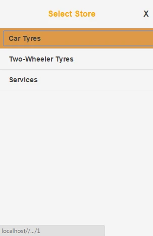
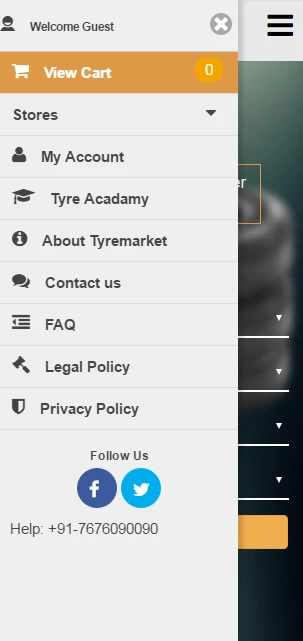
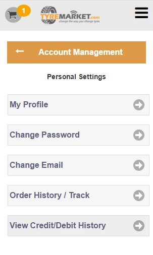
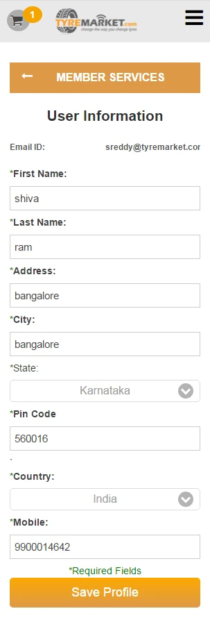
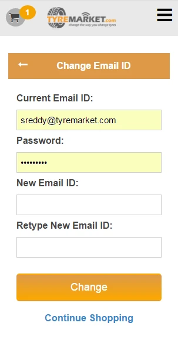
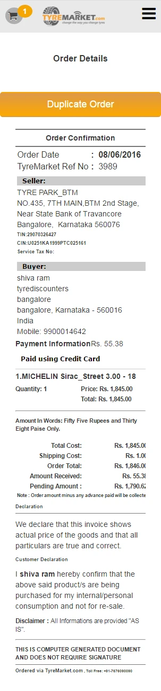
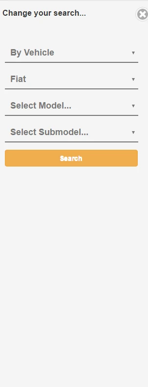
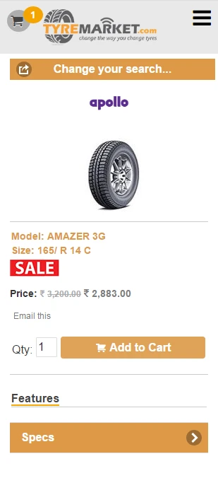
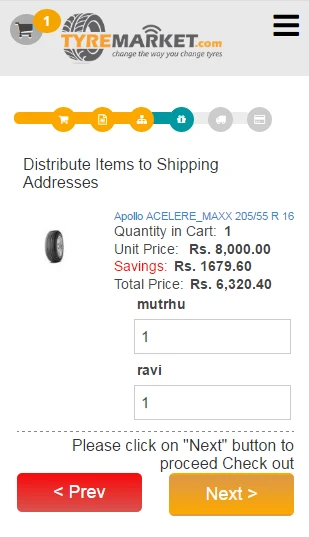
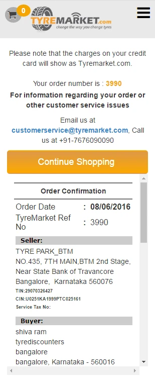
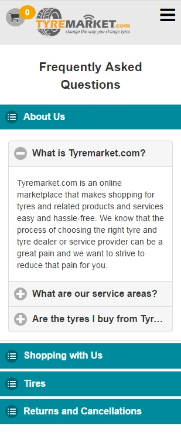
Impact
- 20% reduction in inventory mismatch
- Higher user confidence through transparency
- Increased O2O (online to offline) engagement
- Smoother internal operations through integrated systems
Final Thoughts
This project brought together UX research, frontend strategy, and backend system thinking to build a seamless customer experience and operational efficiency.
Let’s Work Together
Open to roles where I can drive impact through thoughtful design and clean code.